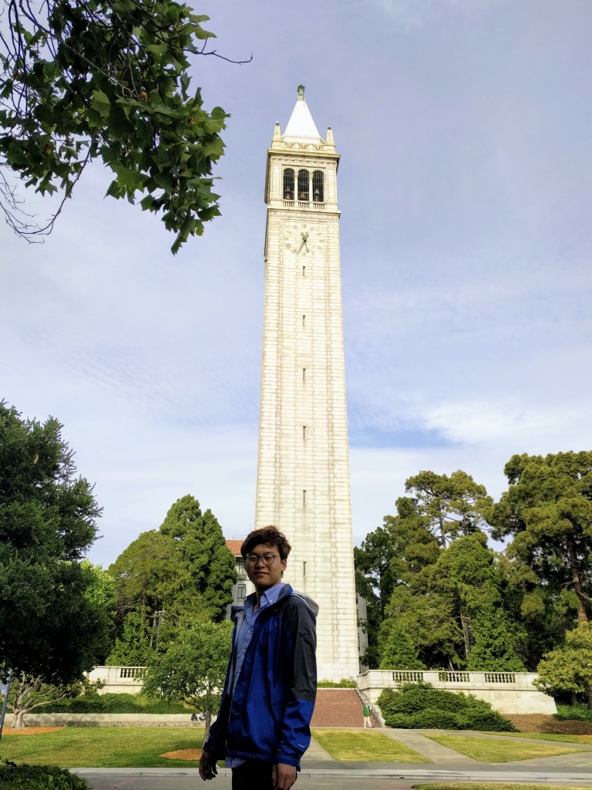

About Me
Why computer science AND chemistry? I initially chose to major in chemistry because I was interested in working in the hardware tech industry, such as making batteries, screens, or cameras. But after being a student in Berkeley for over a year, I was influenced by the huge wave of computer science students and Bay Area tech companies. So I fast tracked my CS curriculum and took all the requirements to declare CS major at UC Berkeley. I had the intent to switch out of the chemistry major, but realized that I could use the power of software to better understand the complexity of chemistry. With the combination of the two subjects, I am interested in software engineering, machine learning, and quantum computing. Hopefully, quantum supremacy is just around the corner and we can explore new domains of software and hardware in the near future.
Music I Listen To
My mega K-Pop playlist.